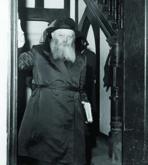

The Guardian on the Doorposts
On Motzaei Yud Shvat 5734, the Rebbe gave the signal for the Mezuza Revolution. The Rebbe spoke about the importance of having mezuzos on the doorposts in every Jewish home and about checking mezuzos every year. * The terrorist attack in Maalot took place a few months later and astonishingly, there were 21 murdered which corresponded to 21 pasul mezuzos in the school they attended. The Rebbe affirmed the connection. * The Rebbe urged the Chassidim to undertake a major campaign to raise awareness of the importance of the mitzva and even sent $10,000 for the cause. * Forty years since Mivtza Mezuza began.

“When permission was granted, they took the attractive case down. When they opened it they found it empty. The people living there were shocked. It was the responsibility of the contractor who built the house to put mezuzos on the doors, but he had not ensured that inside the case there be a piece of parchment with two sections of the Torah written by a scribe.”
That was the lead-in to a fascinating feature article in Maariv about Mivtza Mezuza when it first began. It went on to say:
“Anshei Chabad, who have been involved in checking mezuzos around the country in recent months, say that the incident with the contractor in Hertzliya is not unusual. Many mezuzos are pasul, are printed paper instead of inscribed parchment, or are even empty cases. They offer to change the pasul mezuza for a kosher one that costs 22 liras. Those who can’t afford it pay less and in certain cases they get it for free. Since the campaign began, thousands of mezuzos have been changed. Those involved in this mitzva, upon instruction by the Lubavitcher Rebbe, have accrued a deficit of close to 100,000 liras.
“In the meantime, requests are pouring in to Tzeirei Chabad from all parts of the country to come and check mezuzos. Hadassah hospital in Yerushalayim decided to check the mezuzos on all the doors and to pay the cost. Chabad committed to sending someone to do the work over the course of a month.”
During the year 5734, there was a great awakening in Eretz Yisroel regarding mezuzos. Lubavitchers were extremely busy and many teams went out every night to make house calls where they checked, replaced, or sold thousands of mezuzos.
The campaign, Mivtza Mezuza, began Motzaei Yud Shvat 5734 and got into high gear a few months later. In order to understand the early days of this campaign, we undertook a special research project, which included examining and comparing letters from the Rebbe, reports from meetings of activists, brochures and flyers of those days, newspaper excerpts and firsthand reports.
A KOSHER MEZUZA IS A PROTECTIVE MEZUZA
Mivtza Mezuza began in 5734?
Yes, officially, but already at the start of the Rebbe’s nesius he encouraged the checking of t’fillin and mezuzos. The Rebbe was asked whether this was because of a halachic problem with mezuzos. He said that although the halacha is that you only need to check them twice in seven years, in the Mechilta and Matteh Efraim it says to check them every 12 months and it is worthwhile doing so. Many received answers from the Rebbe like this and they saw great salvations. In the first two decades of his nesius, the Rebbe repeatedly referred to this in many letters, but in 5734 he went public with it, announcing the Mezuza Campaign.
The security situation in Eretz Yisroel at the time was tense. It was during the period of the ceasefire following the Yom Kippur War. Despite the agreements, the Syrians would fire off artillery rounds from time to time, and the PLO would fire rockets from Lebanon into cities in northern Israel. Terrorists tried penetrating the border and when they were successful, they perpetrated cruel attacks.
In light of the security situation, the Rebbe gave a number of instructions that Motzaei Yud Shvat at the farbrengen:
To try and see to it that every family unite at the Friday night meal.
That every house have a pushka.
That every house have a Siddur and T’hillim.
That there be set times for Torah study.
That a mezuza be placed at the door of every home.
The Rebbe spoke at length about mezuza and spoke in heavenly terms that only months later were understood. The Rebbe explained that “when you go out and when you come in” it should be easily recognizable that one is a part of the Jewish nation and this is accomplished by having a mezuza in the doorway of a Jewish home. The Rebbe emphasized repeatedly that a mezuza is not only placed on the entrance to the house but also on the doors of rooms as well as the gate of a city and country:
“The inyan of mezuza serves as a testament to the entire house and everything within the house and this is connected with the sections within the mezuza that begin with ‘Shma Yisroel Hashem Elokeinu Hashem Echad,’ and concludes with the promise of the true and complete Geula, when ‘your days and the days of your children will increase on the land that Hashem swore to your fathers etc. as the days of heaven and earth’ and in an eternal way this will be fulfilled with the true and complete Geula.
“The practical point is: to try and see to it that in every house, even the doorways of rooms within the house, a kosher mezuza be placed.”
The Rebbe explained at length how a mezuza protects Jews as alluded to in the letters written on the back of the mezuza, the shin, dalet and yud which stand for Shomer Dalsos Yisroel (Guardian of the Doors of Israel). After speaking about the imperative of putting up mezuzos where they are needed, the Rebbe spoke about checking to see that the mezuzos are kosher.
From the very start, the issue of money came up. Where would the money come from to buy thousands of mezuzos? The Rebbe responded with a surprising answer:
“There are Jews who have already committed to participating in the expenses associated with this, that every Jewish house have kosher mezuzos in the doorway.”
The Rebbe said that whoever wanted a kosher mezuza, should pay for it, but if he insisted on not paying, then a “penny” should be taken from him, i.e. something symbolic, and the mezuza given to him as a gift.
The main thing, said the Rebbe, is that every Jewish house should have a mezuza, which would show that this house is protected by the King of kings, Hashem. When there would be a mezuza on the entrance to the house, the door to a room, and even the gate of a city or country, this would serve as a testament and protection “for all the matters and people and individuals” in that country or city or house or room.
Mivtza Mezuza, along with the previous campaigns the Rebbe had announced, became a new concept referred to as “the Five Mivtzaim” that included: Mivtza T’fillin – which the Rebbe had announced in the period of the Six Day War in 1967, Mivtza Mezuza, Mivtza Bayis Malei S’farim, Mivtza Tz’daka, and Mivtza Torah.
The concept of the Five Mivtzaim did not last long, since already in Elul 5734 the Rebbe announced Mivtza Neiros Shabbos Kodesh, and the Mitzva Tanks started too.
PUBLICITY IN THE SCHOOLS
One of the “Nachshons” who jumped into the water to fulfill the Rebbe’s instruction was R’ Moshe Slonim a”h, then one of the directors of the Reshet Oholei Yosef Yitzchok. He sent detailed instructions to principals of the Reshet schools which brought the Rebbe’s campaign to thousands of families.
Here are some interesting quotes from a letter that he sent to principals:
12 Shvat 5734
Dear Principals of Chabad schools, greetings!
Please read the following lines with special attention because they are important and critical and affect all Am Yisroel in the state they are now in. Each of us needs to marshal our energies to carry out these instructions in a way of “U’faratzta.”
At the Yud Shvat farbrengen the Rebbe said to take action regarding the following points [here he enumerated the points mentioned above such as uniting families at the Shabbos table, etc.]
In the second part of the letter R’ Slonim got down to practical details:
“The pushkas were already sent to all the schools according to the number of families of the students who attend the schools. Every principal can order additional pushkas and have them given out by students in the upper classes.”
As far as a Siddur and T’hillim - “Although it is assumed that the families of students of schools in the Reshet have a Siddur and T’hillim, principals should check, maybe these s’farim are absent from a few families. The hanhala of the Reshet will supply the s’farim as needed.”
As far as mezuzos, R’ Slonim wrote: “There are many homes where the mezuzos are not as they ought to be and they have not been checked in a long time. Therefore, there needs to be publicity about checking mezuzos. We will have a fund for buying kosher mezuzos, and the fund will subsidize part of the cost of the mezuza according to the need. The publicity regarding checking and buying mezuzos needs to be done through the students and by flyers distributed in the neighborhood. This requires initiative on the part of the principals.”
In conclusion, R’ Slonim asserted that the principals needed to urge the students to have families eat together Friday night and that one child should read or tell the story of the week (which would be selected by the school from Talks and Tales and would be distributed to the students).
***
At the 15 Shvat farbrengen, the Rebbe spoke about Mivtza Mezuza again, as well as about the importance of having pushkas in every home.
In light of the latest instructions, the secretariat published, on 19 Shvat, a list of special instructions regarding activities associated with Mivtza Mezuza:
“In order that the Rebbe’s instruction and demand regarding putting up mezuzos in as many Jewish homes as possible, reach as broad a public as possible, in Eretz Yisroel in particular:
1) Speak to all principals and teachers, including those who are presently far from being religious – that they should speak with their students about the mitzva of putting up a mezuza and explain to them – to the principals and teachers – that aside from the mitzva of mezuza itself, when a child sees a mezuza in his parents’ home and asks what it is, this will illuminate his way and distance him from the “street” …
2) Address rabbanim in writing, orally and by telephone, and urge them to speak to their congregations and to those within their sphere of influence about Mivtza Mezuza, that a house with a mezuza has physical and spiritual protection. To carry this out, obtain what the Rebbe said at the farbrengens, copy it and give it out among the aforementioned along with the proper explanation.”
It also said in the secretaries’ instructions that those who do not have the means to buy mezuzos should be assisted with loans or subsidies. The hope was that by turning to all the schoolchildren as well as rabbanim, they would be able to reach the largest possible number of Jews.
2000 MEZUZOS IN A MONTH AND A HALF
A few hours after the instructions went out from the secretaries’ office, the Rebbe’s secretary, R’ Chadakov told R’ Efraim Wolf that a “tremendous public commotion” needed to be made about this, and three quarters of the expenses “would be paid from here,” i.e. by the Rebbe.
A few hours later three distinguished askanim met in Yerushalayim to discuss how to proceed. They were R’ Efraim Wolf – director of Yeshivos Tomchei T’mimim, R’ Zushe Wilyamowsky (“the Partisan”), and R’ Moshe Slonim – one of the directors of the Reshet. The three met with R’ Binyanim Tzvieli of Israeli television, who promised to help them publicize the message.
R’ Efraim Wolf and R’ Moshe Slonim along with R’ Tuvia Blau met with activists from Tzach in Yerushalayim. In Yerushalayim they had already composed a special letter to Chabad Chassidim and had also composed the wording for a flyer that would publicize the Rebbe’s horaos about mezuzos.
In other cities too they began organizing for Mivtza Mezuza. They bought mezuzos, made house calls, and put up kosher mezuzos in many homes.
There was one Chassid who did not wait for the collective organizational infrastructure to develop. He began working on his own and did so with great devotion. I refer to R’ Mordechai Aharon Malov who, within a month and a half since the start of the campaign, had replaced about two thousand mezuzos! He did not ask for immediate payment for the mezuzos, but asked to be paid over the course of a year. R’ Efraim Wolf undertook to provide the financial support for his efforts.
The cost of the mezuzos was the major obstacle in this campaign. To give mezuzos for free or on an installment plan required huge financial wherewithal. At a certain point it was feared that the intensity of the campaign would begin to wane because of money problems. R’ Chadakov was aware of this and he told R’ Wolf on 6 Nissan 5734:
“Tell R’ Yisroel Leibov (director of Tzach) that with regard to Mivtza Mezuza not to look at the numbers so as to operate with a shturem, and to get to work before Pesach. 50,000 liras are being sent for this purpose.”
The campaign was low key at this point and one of the few announcements in the newspapers was very brief:
“A worldwide campaign to put up mezuzos in Jewish homes has begun in recent weeks by Chabad Chassidim as per orders from the Admur of Lubavitch of New York” (Davar 16 Nissan 5734).
PASUL MEZUZOS CORRESPONDING TO THE NUMBER KILLED
The tragic morning of 23 Iyar 5734 will forever be remembered by Jews the world over. A group of students from Tzfas who were on an annual outing, spent the night in a school in Maalot. Terrorists infiltrated the building and held them hostage, 105 students and 10 adults. In negotiations they demanded the release of twenty terrorists who were in Israeli prisons.
After hours of tension, Moshe Dayan, then Defense Minister, decided to send special forces to forcibly remove the children. This decision proved to be a disaster. The tragic results were 21 children and three adults who were killed, with another sixty-eight injured. Of the special forces some were also injured and one killed.
This massacre left the country reeling. Pictures of the dead children and the stories of those who survived made a huge impact in Eretz Yisroel and in Jewish communities abroad.
The director of the Chabad house in Tzfas in those days was R’ Avrohom Eisenbach. He checked the mezuzos in the school where the students learned and all the mezuzos were pasul. When they counted the number of pasul mezuzos, it turned out that the number of pasul mezuzos was the same as the number of students killed. This information quickly spread.
On the Shabbos following the tragedy, the Rebbe spoke sadly about the pasul mezuzos in the school and the connection between the number of pasul mezuzos and the number of dead. The Rebbe uncharacteristically revealed that he had been “pushed” to do this campaign, which everyone understood to mean that it came straight from “Above” …
“A young man [R’ Avrohom Eisenbach] called me from Tzfas and said [while the children were being held hostage] that since the children were not from Maalot but were residents of Tzfas, he asked for a bracha that they be mentioned for a bracha at the Ohel.
“Afterward, he said that in checking the mezuzos in their school [in Tzfas] there were 17 mezuzos and they were all pasul. At that time, the number of children killed was 17. The next day, the newspapers reported 20 dead. I found this astonishing. I asked him to check again and they realized there were some additional rooms with four mezuzos, two of which were pasul and two of which were questionable. We see clearly the divine providence in which the first announcement said 17 children and there were 17 mezuzos that were pasul and then they announced another three and there were another three mezuzos that were pasul.
“I involved myself intensely with Mivtza Mezuza. They pushed me and gave me no rest from demanding and talking about mezuza. I myself did not know why. At the time I gave reasons about protecting Jewish homes etc. but why specifically the mitzva of mezuza? There are many mitzvos and each mitzva has a segula, even when not performing the mitzva in order to receive a reward but because it is Hashem’s command. Now we saw how this entire incident was connected with the mitzva of mezuza” (translation from the introduction to Igros Kodesh vol. 28, p. 9).
***
Until then, people spoke about the Rebbe’s request to check mezuzos. After the tragedy in Maalot, the Rebbe referred to it as Mivtza Mezuza. The following Shabbos, the Rebbe announced other mivtzaim: Tz’daka, Torah, House Full of S’farim – which along with Mivtza T’fillin became the “Five Mivtzaim,” which the Rebbe spurred on during the period that followed.
The Rebbe explained that the five campaigns were special segulos for protection, like a helmet used by a soldier to protect his head. When he wears a helmet, the enemy’s weapon can’t hurt him, but if he doesn’t wear a helmet, or if it is taken from him, he is in danger.
MEETING OF
ASKANIM AND T’MIMIM
On Sunday, 27 Iyar, there was a meeting of T’mimim in Kfar Chabad in which they decided on a list of practical suggestions for Mivtza Mezuza: to urge Anash to publicize the Rebbe’s recent sicha about Mivtza Mezuza, to distribute brochures and publicize it in the media, to organize a committee in every city to take care of the campaign, with each committee contacting the rabbis of the city and members of the religious city council for their help.
The next day, another meeting took place in the home of R’ Yisroel Leibov. Attending the meeting were the askanim: Yisroel Leibov, Zushe Wilyamowsky, Boruch Gopin, and Moshe Slonim. Representatives of the T’mimim were: Yosef Yitzchok Segal (today a mashpia in Tomchei T’mimim in Migdal HaEmek), Shlomo Vigler (today administrator in Tomchei T’mimim in Lud), and Menachem Wolpo (today a shliach in Netanya).
After reviewing the results of the meeting of the T’mimim, R’ Moshe Slonim said that the Rebbe said to include the schools in Mivtza Mezuza and so, the bachurim should go to the schools to speak to the students about the campaign and its importance.
R’ Zushe said he had gotten an instruction from the Rebbe’s secretary to spur on rabbanim, askanim, and school principals, and to organize a central committee to coordinate the campaign.
R’ Leibov, who was going to finance the campaign, explained that the cost of the mezuzos did not allow them to wage a major campaign and even placing ads in newspapers would cost a lot of money. He then ran through a number of suggestions including going to the Housing Ministry so that new houses would have kosher mezuzos from the outset.
During the meeting, R’ Yosef Perman, who was involved in the campaign, walked in. He wanted to buy 120 mezuzos but said it was impossible to take money from people for the mezuzos, and he did not know how to cover the expenses. R’ Slonim said that Tzach’s job was to generate publicity and to announce that mezuzos could be purchased while the bachurim would go to schools to speak to students about the importance of mezuzos as protection, especially after what occurred in Maalot.
At the meeting they also spoke about getting rabbanim to sign to an announcement calling upon everyone to check their mezuzos.
SURPRISE FARBRENGEN ON A WEEKDAY
While Chassidim came up with ideas of how to run a national campaign, a fatal car accident occurred not far from Kfar Chabad. The rav of Kfar Chabad, R’ Shneur Zalman Garelik and three Chassidim from Shikun Chabad Lud were killed. This tragedy was understandably depressing for Chassidim in Eretz Yisroel, but the Rebbe did not allow them to dwell on it; he asked them to continue working.
A few days after the accident the Rebbe held a weekday farbrengen, which was most unusual. It was around 9:30 at night when R’ Chadakov announced that a short farbrengen would take place that night. That was short notice and the chaos in 770 was enormous. Everyone ran to find a phone in order to call whoever was in the area so they could come to the unexpected farbrengen. Calls were also placed around the world so that direct broadcasts could be arranged. In the few remaining minutes some arranged tables and benches.
About a quarter of an hour went by since the announcement when the Rebbe walked in for Maariv. A few minutes after the davening, the Rebbe returned to the zal and the farbrengen commenced. The Rebbe began with the maamer, “B’Haalos’cha es HaNeiros,” and in the first sicha he spoke about the verse, “it is a time of distress for Yaakov from which he will be saved” - tzara in Hebrew (tzaddik, reish, hei) are the letters of tzohar. This is the idea of “transforming darkness into light.” The fifteenth of the month, when the moon is fullest, is auspicious as it was with the Rebbe Rayatz that his imprisonment began on the fifteenth of Sivan and then it all turned into good. That is the idea of the mivtzaim, to transform darkness into light. Then the Rebbe explained all the mivtzaim again.
In the second sicha the Rebbe revealed one of the reasons for the unusual farbrengen. Since it is a greater mitzva to do it oneself than through an emissary, and since he recently spoke a lot about mivtzaim and also sent shluchim to speak about it, therefore he wanted to speak about it himself. This was an opportunity [since it was a weekday when it could be recorded and broadcast] for his message to reach not only those who were in attendance but whoever was listening around the world.
The Rebbe referred to the terrible car accident and said it was time for the Jewish people to be singled out in a good way, and the mezuzos in the places connected with what occurred should be checked.
As soon as the broadcast was over, askanim in Kfar Chabad met with R’ Efraim Wolf. They decided that R’ Meir Friedman of Tzach would provide a supply of mezuzos and R’ Moshe Slonim would publicize the Rebbe’s message among Lubavitchers.
Following the Rebbe’s sicha and the spontaneous meeting, a formal meeting took place in the offices of Tzach in Tel Aviv which was attended by Lubavitcher askanim from all over the country. Each participant raised suggestions regarding possible approaches to carrying out the Five Mivtzaim based on the Rebbe’s instructions. Also, each one gave a report about activities that had been done thus far.
At the end of the meeting, they decided to form a “Working Committee for the Five Mivtzaim” that would operate under Tzach headed by R’ Leibov. The committee was made in charge of coordinating activities in Eretz Yisroel. R’ Leibov subsequently wrote a special letter to fellow Lubavitchers in which he reviewed the Rebbe’s call to be involved in the Five Mivtzaim associated with the situation in Eretz Yisroel in general, and what was happening among Chabad Chassidim in particular. He also announced the new committee and its function.
THE REBBE DEMANDS:
A NATIONAL COMMOTION WITHIN A DAY
The Rebbe did not let the Chassidim relax. Even before they had organized adequately, he decided to quickly expand the campaign. On 15 Tammuz, a telegram from the Rebbe arrived with instructions to increase the mivtzaim before the Three Weeks, i.e. within two days. This was despite the fact that the telegram had arrived Thursday night and the Three Weeks began on Sunday.
In addition to the telegram there was also a phone call from the Rebbe’s secretary. The message was to start intensified activity wherever they could, before the Three Weeks including the upcoming Shabbos, and to make a big commotion about it. But the commotion should be in a way of pleasantness and calm, and to avoid undue emotionalism.
The secretary said that the Rebbe asked for an update before Shabbos.
The telegram plus the additions from the secretary were publicized in a special circular which said: “Urgent for all of Anash” and which said in the margin that the reports should be submitted via phone to R’ Leibov or R’ Wolf.
In those days, when not everyone had a home phone and certainly no fax machine, this was very complicated, but they managed to get the message out to all Lubavitchers in Eretz Yisroel. The Chassidim immediately went out on mivtzaim.
As to what happened during that day we can find out from R’ Wolf’s report. Here are some brief quotes:
Via R’ Moshe Slonim we were told: in Haifa 60 talmidim from B’nei Akiva yeshivos did mivtzaim and it was spoken about in dozens of shuls.
In Raanana, Hertzliya, Netanya, and Tel Aviv’s Central Bus Station they did Mivtza T’fillin and Mezuza.
Three cars went out to the Yerid HaMizrach (Orient Fair) exhibit in Tel Aviv.
R’ Zimroni Tzik went to work on this matter in Bat Yam with a car and loudspeaker.
Work was also done in Ramle.
R’ Moshe Edrey went with a car and loudspeaker to Dizengoff Square.
R’ Shlomo Lifschitz went to Hadera to hang up flyers in the shuls there.
At the Central Bus Station and in Magen Dovid Adom Square in Tel Aviv flyers were given out about mivtzaim.
They also did work at the airport.
R’ Tuvia Blau of Yerushalayim reported: They spoke regarding mivtzaim in 39 shuls and in 24 shuls they read the Rebbe’s telegram. From Toras Emes a Tahalucha of 40 Lubavitchers went to Kiryat Yovel where they dispersed. On the eve of the Shabbos they spoke about it at the Kosel. Lubavitchers committed to checking mezuzos.
Erev Shabbos and Shabbos the Rebbe’s telegram was given out in all the shuls in Tel Aviv by R’ Moshe Yaroslavsky.
***
The original list is longer and included dozens of towns, yishuvim, hospitals and even kibbutzim as we see in the following excerpt:
“R’ Perman visited Kibbutz Naan and gave out Siddurim, T’hillims, and pushkas and the kibbutz secretary was pleased. At Kibbutz Givat Brenner they also did the above in the preschools and schools.
“On Shabbos in Kfar Chabad and Lud there were shifts by day and by night for Torah study, while in Yerushalayim they set up fifteen stations for Mivtza Mezuza and the other mivtzaim and stood there for more hours than usual.”
THE REBBE SENDS $10,000
Despite the good intentions of Lubavitchers in Eretz Yisroel to reach every home and ensure it had kosher mezuzos, the money problem was a constant sticking point. R’ Leibov sent a letter to the Rebbe in which he complained about the money situation. In response he received a check from R’ Chadakov for $10,000. Included was a fascinating response from R’ Chadakov which shed new light on the Five Mivtzaim and Mivtza Mezuza in particular:
“On the one hand, the Five Mivtzaim must be continued, especially Mivtza Mezuza, with strength and alacrity and the greatest commotion. As additional proof to this is the Rebbe’s promise that if there is no other way to cover the deficit, to support it from here in the greatest possible way, as you know.”
R’ Chadakov wrote that these large amounts sent to Eretz Yisroel and other places for mivtzaim were not just “squandering the treasures,” but much more than that. Despite this, they should continue with Mivtza Mezuza with the fullest energy, but on the other hand, they should look for ways to obtain the necessary funding.
The campaign continued, despite the money difficulties, and as mentioned earlier, by Elul a new campaign had begun, Neiros Shabbos Kodesh and the outreach changed direction once again.
IN THE WAKE
OF THE CAMPAIGN
In the summer of 5734 many announcements were printed in Israeli newspapers about the Five Mivtzaim, in large part thanks to R’ Berke Wolf, the Chabad spokesman. He got major radio and television stations to broadcast about the mivtzaim. The tremendous publicity slowly reached all segments of the public. The huge change in public opinion about the importance of mezuzos and their kashrus was credited to the Rebbe.
Previously, there were tens of thousands of homes in Eretz Yisroel without any mezuzos or only on the front door. Often its kashrus was dubious. Even among observant people, there was not enough awareness about the importance of checking mezuzos regularly. However, once the Rebbe pushed the Mezuza Campaign, awareness about the importance of checking mezuzos penetrated and the phenomenon of tiny mezuzos or paper mezuzos almost disappeared. Many now check their mezuzos regularly.
Sources: Sichos Kodesh, Igros Kodesh, HaPartisan, Yemei T’mimim, Beis Moshiach, Kfar Chabad, Davar, Maariv, Yoman Rav Yitzchok Meir Sossover, and documents from the time of the campaign.
WHY ANNUAL CHECKING IS NECESSARY
During the campaign, the Rebbe urged that the mezuzos be checked every twelve months and not to suffice with what it says in Halacha to check twice in seven years. Some asked why it is necessary to check them every year. The Rebbe responded in a farbrengen that took place in honor of Chaf Av 5734:
1-The p’sak of seven years was not said regarding a situation in which there is a doubt about basic kashrus of the mezuza, such as whether the case contains a mezuza made out of parchment or whether the Priestly Blessing is what is written inside …
2-The parchment and ink nowadays is not as good quality as in the era of the Shas and they don’t last as long, as we see.
3-The Matteh Efraim which deals with Halacha says to check the mezuzos every Elul, including those which are presumed to be kosher.
Berger. "The Guardian on the Doorposts." Beis Moshiach, no. 914 (February 6, 2014).